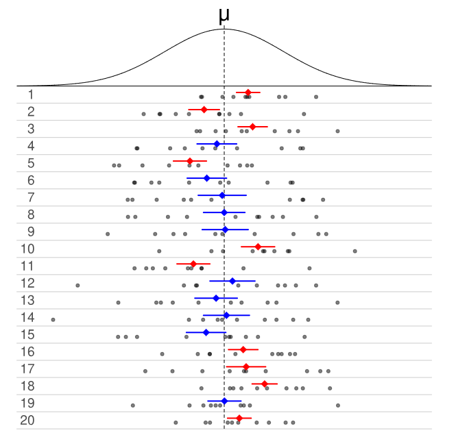
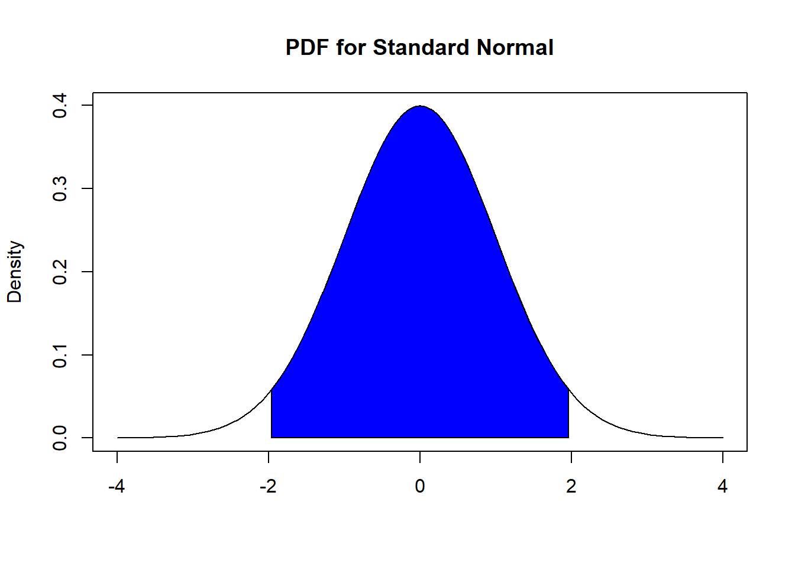
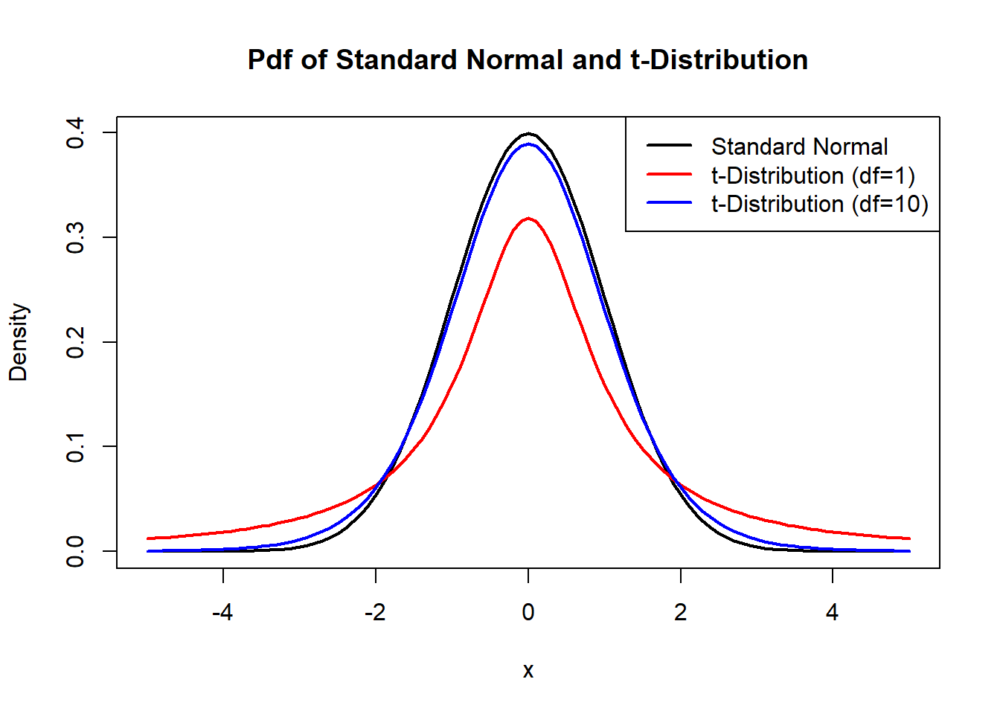

12 Confidence Intervals
12.1 Introduction
In Section 11, we learned about sampling distributions of statistics. For example, we could use the sample mean systolic blood pressure of 750 randomly selected American adults to estimate the mean systolic blood pressure of all American adults. We also established that statistics such as the sample mean have randomness in them. If we were to obtain another random sample of 750 American adults, the sample mean blood pressure from this other sample is likely to be different from the original random sample. So is there uncertainty in our sample mean due to random sampling.
You might notice in Section 11 that we know the sampling distribution of some common statistics, or we can derive the sampling distribution using simulations. In these instances, the value of the corresponding parameters were known. This is unrealistic in real life; the purpose of what we do is to use data from our sample to infer the characteristics in the population!
This section will be more realistic: the values of the population parameters are unknown. In this section, we will introduce confidence intervals. Confidence intervals build on the ideas from Section 11: that statistics are random and we can quantify their uncertainty. The purpose of a confidence interval is to provide a range of plausible values for an unknown population parameter, based on a sample. A confidence interval not only provides the estimated value of the parameter, but also a measure of uncertainty associated with the estimation.
We will first cover confidence intervals for the mean and confidence intervals for the proportion, two of the most basic confidence intervals. These intervals are based on the fact that the distribution of their corresponding statistics, the sample mean and sample proportion, are known as long as certain conditions are met. You will notice that the general ideas in finding confidence intervals are pretty similar; confidence intervals for other statistics that have known distributions will be constructed similarly.
We will learn about the bootstrap, which is used when the distribution of a statistic is unknown, in Section 13.
12.2 Confidence Interval for the Mean
12.2.1 Randomness of Estimators
Suppose we are trying to estimate the mean systolic blood pressure of all American adults, by using the sample mean of 750 randomly selected American adults. The sample mean is an estimator for the population mean. We want to be able to report the value of the estimator, as well as our uncertainty about the estimator. A way to measure the uncertainty of an estimator is through the variance or standard error of the estimator. Larger values indicate a higher degree of uncertainty, as an estimator with larger variance means that the value of the estimator is likely to be different among random samples.
We will start with the confidence interval for a mean, since its sampling distribution is known (see Section 11.3). We will use this setting to explain concepts associated with confidence intervals. We will then generalizing these concepts to other estimators with known distributions.
12.2.2 Randomness of Confidence Intervals
The confidence interval is a probability applied to the estimator \(\bar{X}_n\). Instead of focusing on the estimated value of the sample mean and its variance, we construct a confidence interval for the mean that takes the form:
\[\begin{equation} I = \left(\bar{X}_n - \epsilon, \bar{X}_n + \epsilon \right). \tag{12.1} \end{equation}\]
Some terminology associated with intervals of the form in equation (12.1):
-
\(\epsilon\) is often called the margin of error. (Yes that margin of error that you often see reported in election polls). This value is a function of the standard error of the estimator, so it gives a measure of uncertainty of the estimated value.
- Remember that the uncertainty being measured is the uncertainty due to random sampling, not due to other sources of uncertainty such as not getting a representative sample, people lying, etc. As mentioned in earlier modules, other methods are used to handle such issues and belong to the field of survey sampling, which is very interesting and an active area of research. We will not get into these issues in this class.
The value of \(\bar{X}_n - \epsilon\) is often called the lower bound of the confidence interval.
The value of \(\bar{X}_n + \epsilon\) is often called the upper bound of the confidence interval.
The value of \(\bar{X}_n\) is often called the point estimate of the population mean.
Equation (12.1) is sometimes expressed as
\[\begin{equation} \text{point estimate } \pm \text{ margin of error}. \tag{12.2} \end{equation}\]
Indeed, a lot of confidence intervals take on the form expressed in equation (12.2), as long as the sampling distribution of the estimator is symmetric. Given the interval for the mean expressed in equation (12.1), we ask what is the probability that the interval \(I\) includes the true value of the parameter \(\mu\), i.e. we want to evaluate
\[\begin{equation} P(\mu \in I) = P(\bar{X}_n - \epsilon \leq \mu \leq \bar{X}_n + \epsilon). \tag{12.3} \end{equation}\]
It is important to bear in mind that since the estimator, the sample mean \(\bar{X}_n\) is a random variable, there will also be randomness in the interval \(I\). The numerical values of the lower and upper bounds will change with a different random sample, since the value of \(\bar{X}_n\) will change.
The idea of the interval \(I\) being random is represented in Figure 12.1 below:

Figure 12.1: Randomness of Confidence Interval. Picture from wikipedia
- The density curve in the top of Figure 12.1 represents the PDF of a random variable, that represents the distribution of some variable in the population that we wish to study.
- Each row of dots represents the values of 10 randomly sampled data points from the PDF.
- The colored lines in each row represent the lower and upper bounds of a 50% confidence interval calculated from the sampled data points in the row.
- The colored dot in the center of the confidence interval represents \(\bar{x}\) for the sampled data points in the row.
- The intervals in blue represent confidence intervals that contain the value of \(\mu\), while the intervals in red represent confidence intervals that do not contain the value of \(\mu\).
In Figure 12.1, we note that 50% of the confidence intervals capture the value of \(\mu\), so the probability per equation (12.3) is 0.5. This matches with theory since each confidence interval in Figure 12.1 was computed at 50% confidence.
If we were to create 95% confidence intervals for each row in Figure 12.1, the upper and lower bounds of the intervals will be adjusted so that we will expect 19 of these 20 intervals to contain the value of \(\mu\).
This illustration gives us an interpretation of the probability associated with a confidence interval per equation (12.3): When we construct a 95% confidence interval, there is a 95% chance the random interval \(I\) will contain the true value of the parameter. In other words, if we have 100 random samples and we construct 95% confidence intervals based on each sample, we expect 95 of these intervals to contain the value of the parameter.
The idea of the probability that the random interval \(I\) captures the true parameter gives rise to the confidence level. The confidence level of a confidence interval is denoted by \(1-\alpha\), i.e. if we construct an interval at 95% confidence, \(\alpha=0.05\). Equation (12.3) can be written as
\[\begin{equation} P(\bar{X}_n - \epsilon \leq \mu \leq \bar{X}_n + \epsilon) = 1 - \alpha. \tag{12.4} \end{equation}\]
We will then say \(I\) is a \((1-\alpha) \times 100\%\) confidence interval, or \(I\) is a confidence interval with confidence level of \((1-\alpha) \times 100\%\).
Now that we have established that confidence intervals are random and the definition of the confidence level, we are ready to go into the details of constructing the confidence interval for the mean.
12.2.3 Constructing Confidence Interval for the Mean
We remind ourselves of the sampling distribution of the sample mean, \(\bar{X}_n\), from Sections 11.3 and 11.4. There are a couple of conditions to consider:
\(X_1, \cdots, X_n\) are i.i.d. from a normal distribution with finite mean \(\mu\) and finite variance \(\sigma^2\). Then \(\bar{X}_n \sim N(\mu, \frac{\sigma^2}{n})\).
\(X_1, \cdots, X_n\) are i.i.d. from any distribution with finite mean \(\mu\) and finite variance \(\sigma^2\), and if \(n\) is large enough, then \(\bar{X}_n\) is approximately \(N(\mu, \frac{\sigma^2}{n})\).
If either of these conditions are met, then the distribution of \(\bar{X}_n\) after standardization is either a standard normal or approaches a standard normal distribution, so \(\frac{\bar{X}_n - \mu}{\frac{\sigma}{\sqrt{n}}} = \frac{\bar{X}_n - \mu}{\sqrt{Var(\bar{X})}} = \frac{\bar{X}_n - \mu}{SE(\bar{X}_n)}\) is either standard normal or approximately standard normal when \(n\) is large enough.
Note: \(SE(\bar{X}_n)\) is the standard error of the sample mean. The standard error of any estimator is the standard deviation of the estimator, or the squareroot of the variance of the estimator.
To simplify the notation as it pertains to the confidence interval for the mean, we will let \(\hat{Z} = \frac{\bar{X}_n - \mu}{SE(\bar{X})}\), so \(\hat{Z}\) is standard normal or approximately standard normal. \(\hat{Z}\) can be called the standardized version of the sample mean.
12.2.3.1 Critical Value
We perform some math operations on equation (12.4) to see how we can construct a confidence interval for the mean:
\[\begin{equation} \begin{split} P(\bar{X}_n - \epsilon \leq \mu \leq \bar{X}_n + \epsilon) &= 1 - \alpha \\ \implies P(|\bar{X}_n - \mu| \leq \epsilon) &= 1 - \alpha \\ \implies P \left(|\hat{Z}| = |\frac{\bar{X}_n - \mu}{SE(\bar{X}_n)}| \leq \frac{\epsilon}{SE(\bar{X}_n)} = z^{*} \right) &= 1 - \alpha \\ \implies P(|\hat{Z}| \leq z^{*}) &= 1 - \alpha \\ \implies P(-z^{*} \leq \hat{Z} \leq z^{*}) &= 1 - \alpha. \end{split} \tag{12.5} \end{equation}\]
In equation (12.5), \(z^*\) is called the critical value. So we can see how it is related to the margin of error, \(\epsilon\): the margin of error is the critical value multiplied by the standard error of the estimator (which in this case is the standard error of the sample mean since we are constructing the confidence interval for the mean).
In words, equation (12.5) says that we want to find the critical value \(z^*\) so that the probability that a standardized score is between \(-z^*\) and \(z^*\) is \(1 - \alpha\). Visually, this probability is displayed in Figure 12.2 below when \(\alpha=0.05\). We want to find the values on the horizontal axis so that the blue shaded area corresponds to a value of 0.95 (recall that area under a PDF represents probability).

Figure 12.2: Finding Critical Value with 95% Confidence
We continue working with equation (12.5) to see how we obtain the value of \(z^*\), as long as either of the two conditions for the sampling distribution of \(\bar{X}_n\) to be known are met:
\[\begin{equation} \begin{split} P(-z^{*} \leq \hat{Z} \leq z^{*}) &= P(\hat{Z} \leq z^{*}) - P(\hat{Z} \leq -z^{*}) \\ &= \Phi(z^{*}) - \Phi(-z^{*}) = 1 - \alpha. \end{split} \tag{12.6} \end{equation}\]
where \(\Phi(z) = P(\hat{Z} \leq z)\) is the CDF of a standard normal. Due to the symmetry of the standard normal, \(\Phi(-z^{*}) = 1- \Phi(z^{*})\), and we sub this into equation (12.6) and continue working with it to solve for \(z^*\):
\[\begin{equation} \begin{split} P(-z^{*} \leq \hat{Z} \leq z^{*}) &= 2 \Phi(z^*) - 1 = 1 - \alpha \\ \implies \Phi(z^*) &= 1 - \frac{\alpha}{2} \\ \implies z^* &= \Phi^{-1} \left(1 - \frac{\alpha}{2} \right) \end{split} \tag{12.7} \end{equation}\]
So \(z^*\) is found by inverting the CDF of a standard normal evaluated at \(1 - \frac{\alpha}{2}\). This quantity can easily be found using R. For example, for 95% confidence, \(\alpha = 0.05\), we type:
alpha<-0.05
qnorm(1-alpha/2)## [1] 1.959964which tells us the critical value is 1.96 for 95% confidence.
Thought question: Can you show that the critical value for 96% confidence is about 2.054? Can you show that the critical value for 98% confidence is about 2.326?
12.2.3.2 Confidence Interval for the Mean
We are now ready to put the pieces together to work on the confidence interval for the mean:
\[\begin{equation} \begin{split} P(-z^{*} \leq \hat{Z} \leq z^{*}) &= P(-z^{*} \leq \frac{\bar{X}_n - \mu}{SE(\bar{X}_n)} \leq z^{*}) \\ &= P\left(-z^{*}SE(\bar{X}_n) \leq \bar{X}_n - \mu \leq z^{*}SE(\bar{X}_n)\right) \\ &= P\left(\bar{X}_n - z^{*}SE(\bar{X}_n) \leq \mu \leq \bar{X}_n + z^{*}SE(\bar{X}_n)\right) \\ &= P\left(\bar{X}_n - z^{*} \frac{\sigma}{\sqrt{n}} \leq \mu \leq \bar{X}_n + z^{*} \frac{\sigma}{\sqrt{n}}\right). \end{split} \tag{12.8} \end{equation}\]
Therefore, the \((1-\alpha) \times 100\%\) confidence interval for the mean is
\[\begin{equation} \left( \bar{x}_n - z^{*} \frac{\sigma}{\sqrt{n}}, \bar{x}_n + z^{*} \frac{\sigma}{\sqrt{n}} \right). \tag{12.9} \end{equation}\]
Again, the formula in equation (12.9) is only valid if either of the two conditions in Sections 11.3 or 11.4 is met, i.e. either the data are originally normal, or if the sample size is large enough. As noted in Section 11.4, a larger sample size will be required as the data is more asymmetric.
12.2.3.3 Coverage Probability
Figure 12.1 illustrates the concept of coverage probability. 20 random samples were drawn, and corresponding 50% confidence intervals were constructed, and we find that 10 out of 20 of these intervals contained the true value of the parameter. The coverage probability is 50%, since 10 out of 20 intervals contained the true value value of the parameter. This matches the confidence level of 50%. The coverage probability should match the confidence level, if not, the distribution that we used for the sampling distribution of the estimator is probably incorrect.
So in general, for confidence intervals constructed at \((1-\alpha) \times 100\%\) confidence, the coverage probability of the confidence intervals should be \((1-\alpha) \times 100\%\).
We run a Monte Carlo simulation to show that the coverage probability of confidence intervals for the mean using equation (12.9). The code below does the following:
- Simulate \(X_1, \cdots, X_{10}\) i.i.d. from standard normal.
- Calculate 95% confidence interval for the mean using (12.9).
- Assess if the calculated confidence interval contains 0, since the true mean is 0 (we simulated data from standard normal)
- Repeat these steps for a total of 10 thousand replicates.
- Count the number of confidence intervals that contain 0, and divide by the number of replicates. This value estimates the coverage probability.
- If we did things correctly (correct use of formula, correct distribution for estimator), this estimated coverage probability should be close to the confidence level of 95%.
alpha <- 0.05
## function that simulates data from standard normal,
## then constructs CI for mean, and assesses if CI
## contains 0 or not
mean_Z_cover <- function(n, alpha){
X <- rnorm(n) ##draw n data points from standard normal
##calculate elements needed for CI of mean
xbar <- mean(X) ##sample mean
SE <- 1/sqrt(n) ##SE of sample mean
crit <- qnorm(1-alpha/2) ##critical value
ME <- crit*SE ##margin of error
lower <- xbar-ME ##lower bound of CI
upper <- xbar+ME ##upper bound of CI
##does CI contain 0?
result <- lower < 0 & upper > 0
return(result)
}
## write another function to replicate this simulation, and
## find the proportion of samples with CIs that contain 0
reps <- 10000
rep_mean_Z_cover <- function(n, alpha){
result <- replicate(reps, mean_Z_cover(n, alpha))
return(mean(result))
}
## should be close to the value of alpha, which is 0.05
## in this simulation
set.seed(31)
rep_mean_Z_cover(10, alpha)## [1] 0.9473The estimated coverage probability based on 10 thousand replicates is 94.73%, very close to the confidence level of 95%. This informs us that the distribution assumed for the sample mean was correct.
12.2.4 Confidence Interval for the Mean Using t Distribution
You may have noticed that when we calculate a confidence interval for the mean using equation (12.9), it involves knowing the value of \(\sigma^2\), the variance of the variable in the population, which is a parameter. However, we have mentioned that the whole purpose of estimation and confidence intervals is to estimate the value of unknown parameters and quantify the uncertainty associated with the estimate. The numerical value of parameters are very rarely known! So how could we actually use equation (12.9) in real life?
The solution to this is fairly intuitive, we use the sample variance \(s^2 = \frac{1}{n-1} \sum_{i=1}^n (x_i - \bar{x})^2\) to estimate \(\sigma^2\). What is less intuitive is that the distribution of the standardized version of the sample mean changes.
We had earlier mentioned that if certain conditions are met, then \(\hat{Z} = \frac{\bar{X}_n - \mu}{\frac{\sigma}{\sqrt{n}}}\) is either standard normal or approximately standard normal. If we estimate \(\sigma^2\) with \(s^2\) and replace \(\sigma\) with \(s\) in \(\hat{Z}\), we get a new random variable
\[\begin{equation} T = \frac{\bar{X}_n - \mu}{\frac{s}{\sqrt{n}}} = \frac{\bar{X}_n - \mu}{SE(\bar{X}_n)}, \tag{12.10} \end{equation}\]
where \(SE(\bar{X}_n)\) is now \(\frac{s}{\sqrt{n}}\). It turns out that \(T\) follows another well-known distribution, called the \(t\) distribution with \(n-1\) degrees of freedom. The PDF of a \(t\) distribution is pretty long and is not needed for this course (you can look it up on your own), but we take a look at the plot of its PDF and compare it with the plot of the PDF of a standard normal, in Figure 12.3 below.
##plot PDF from -5 to 5
x <- seq(-5, 5, length.out = 100)
##plot the standard normal
curve(dnorm(x), from = -5, to = 5, lwd = 2,
ylab = "Density", xlab = "x",
main = "Pdf of Standard Normal and t-Distribution")
##overlay the t-distribution with 1 and 10 degree of freedom
curve(dt(x, df = 1), from = -5, to = 5, col = "red", lwd = 2, add = TRUE)
curve(dt(x, df = 10), from = -5, to = 5, col = "blue", lwd = 2, add = TRUE)
legend("topright", legend = c("Standard Normal", "t-Distribution (df=1)", "t-Distribution (df=10)"),
col = c("black", "red", "blue"), lty = 1, lwd = 2)
Figure 12.3: Plot of PDF for Z and t Distributions
From Figure 12.3, we note a few things about the \(t\) distribution:
- It is centered at 0, just like a standard normal.
- It is also symmetric and bell-shaped, just like a standard normal.
- It has heavier tails than the standard normal. In other words, extreme values (large or small) have slightly higher probabilities of occurring for a \(t\) distribution than for a standard normal.
- As the degree of freedom increases, the \(t\) distribution gets closer to a standard normal. Notice how the blue curve is closer to the standard normal curve in black, than the red curve is with the black curve. In fact, one can show mathematically that the PDF of a \(t\) distribution converges to the PDF of a standard normal as the degree of freedom increases to infinity.
How does the fact that we are working with a \(t\) distribution instead of a standard normal affect how we calculate a confidence interval for the mean? How does equation (12.9) change? We replace \(\sigma^2\) with \(s^2\) and \(z^*\) with \(t^*\). The critical value is now denoted by \(t^*\) to emphasize that it is based on the \(t\) distribution.
As an example to find the critical value of a \(t\) distribution with 10 degrees of freedom and with 95% confidence:
alpha<-0.05
qt(1-alpha/2, 10) ##supply percentile first, then value of df## [1] 2.228139Therefore, the \((1-\alpha) \times 100\%\) confidence interval for the mean , when \(\sigma^2\) is unknown, is
\[\begin{equation} \left( \bar{x}_n - t^{*} \frac{s}{\sqrt{n}}, \bar{x}_n + t^{*} \frac{s}{\sqrt{n}} \right). \tag{12.11} \end{equation}\]
Again, the formula in equation (12.11) is only valid if either of the conditions in Sections 11.3 or 11.4 is met, i.e. either the data are originally normal, or if the sample size is large enough.
12.2.4.1 Worked Example
A sample of 66 obese adults was put on a low-carbohydrate diet for a year. The average weight loss was 11 lb and the standard deviation was 19 lb. Calculate a 99% confidence interval for the true average weight loss. Does the confidence interval provide support for the claim that the mean weight loss is positive?
From the question, we summarize the information as:
- \(n = 66\),
- \(df = n-1 = 65\)
- \(\bar{x} = 11\),
- \(s = 19\),
-
\(\alpha = 0.01\), so \(t^*\) is found using
qt(1-0.01/2, 65)which is 2.653604.
We have no information about the distribution of the data. However, the sample size is 66, which is usually large enough to use the CLT, so we can use equation (12.11):
\[ \left( 11 - 2.653604 \frac{19}{\sqrt{66}} , 11 + 2.653604 \frac{19}{\sqrt{66}} \right) \] which gives (4.793914, 17.20609). Since the entire confidence interval lies above 0, our data support the claim that the mean weight loss is positive.
Interpreting the CI: There is 99% probability that the random interval (4.793914, 17.20609) will include the true average weight loss of obese adults on a low-carbohydrate diet for a year.
What else can we say from the confidence interval?
Values outside the confidence interval are considered to be “ruled out” as plausible values of the parameter. So if we wanted to assess if the average weight loss of obese adults on a low-carbohydrate diet for a year is 20 pounds, our interval does not support this claim, since the value of 20 lies outside the interval. We can say our data do not support the claim that the average weight loss of obese adults on a low-carbohydrate diet for a year is 20 pounds.
-
Values inside the confidence interval are considered to be plausible values of the parameter. Any value inside the interval is considered plausible. A common mistake will be to specify a certain value in the interval, and conclude that the parameter is equal to that specific value. For example, it will be a mistake to say that since the value 10 lies inside the interval, the interval supports the claim that the average weight loss of obese adults on a low-carbohydrate diet for a year is 10 pounds. This is because other values in the interval are still considered plausible.
- In such a situation, we will say that our data do not support the claim that the average weight loss of obese adults on a low-carbohydrate diet for a year is different from 10 pounds, since 10 lies inside the interval. We cannot rule out the value of 10.
12.2.4.2 Confidence Interval for Mean Using \(t\) VS Using \(z\)
A couple of interesting things to note with critical values associated with the \(t\) distribution:
- For the same level of confidence, \(t^*\) will never be smaller than \(z^*\).
Thought question: Can you give an intuitive explanation as to why? Using Figure 12.3 may be helpful.
- The value of \(t^*\) gets closer to the value of \(z^*\) as the degree of freedom gets larger. This implies that \(t^*\) is approximately equal to \(z^*\) for large sample sizes.
Recall that the margin of error is the critical value multiplied by the standard error of the estimator. So margin of errors tend to be larger when \(\sigma^2\) is unknown. It should make intuitive sense that we have a higher degree of uncertainty since we have an additional parameter to estimate.
Since the margin of error tends to be larger when \(\sigma^2\) is unknown, it means the width of the confidence interval for the mean tends to be wider when \(\sigma^2\) is unknown. The width of a confidence interval is the difference between its upper and lower bound, or twice the margin of error.
Thought question: Try running the Monte Carlo simulation in Section 12.2.3.3, but now use the sample variance instead of the population variance. Find the coverage probabilities of the confidence interval if we use the correct formula in equation (12.11), and if we use a \(z^*\) as the critical value with the sample variance.
12.2.4.3 Degrees of Freedom
An intuitive explanation of degrees of freedom is the number of independent pieces of information that can take on any numerical value, when estimating a parameter.
Generally speaking, we lose 1 degree of freedom for every equation that must be satisfied. In the context of estimating the population mean using the sample mean, we must always satisfy the equation \(\bar{x} = \frac{\sum_{i=1}^n x_i}{n}\), so we lose 1 degree of freedom from an original set of \(n\) observations, so the degree of freedom is \(n-1\) when calculating the CI for the mean.
12.2.5 Factors Affecting Precision of Confidence Intervals
The width of a confidence interval is used as a measure of precision. A wider width indicates less precision and a higher degree of uncertainty with our estimate. Narrower widths are preferred, as we are able to narrow the range of plausible values for the unknown parameter by ruling out more values. The factors (that are within the researcher’s control) affecting the width of a confidence interval are the items used in calculating the margin of error:
- The level of confidence, \(1 - \alpha\): The width increases as the level of confidence increases.
Though question: Can you use Figure 12.2 to help you explain the width increases as level of confidence increases?
- The sample size, \(n\): As \(n\) increases, the width decreases. This implies that we have more precision, and a lower degree of uncertainty, with larger sample sizes.
Other factors such as whether \(\sigma^2\) is unknown or not, and the value of the variance, are usually not controllable by the researcher.
12.3 Confidence Interval for the Proportion
Next, we will go over the confidence interval for the proportion. This is another common confidence interval. The sample proportion is an estimator for the population proportion.
Proportions are used to summarize categorical variables, whereas means are used to summarize quantitative variables. Consider the following two research questions:
We measure the systolic blood pressure of a sample of American adults. The variable is quantitative, since the answer is a numeric value where arithmetic operations can be applied. We then calculate the average systolic blood pressure of American adults. So we can work on a confidence interval for the mean, using equation (12.11).
We ask a sample of voters whether they support a particular candidate. The variable is categorical, since the answer is yes or no, and we cannot apply arithmetic operations to the answer. We then calculate the proportion of voters who support the candidate. So we need a confidence interval for the proportion.
12.3.1 Sampling Distribution of Sample Proportions
Restating the information from Section 11.5: When the data are independent, and if the sample size is large enough, the sampling distribution of the sample proportions is approximately \(N(p, \frac{p(1-p)}{n})\).
12.3.2 Constructing Confidence Interval for the Proportion
A lot of the concepts and math from the confidence interval for the mean carry over to the confidence interval for the proportion. We will skip the math for the confidence interval for the proportion (although you should be able to derive this result by following the steps and adjusting).
The \((1-\alpha) \times 100\%\) confidence interval for the proportion is
\[\begin{equation} \left( \hat{p} - z^{*} \sqrt{\frac{\hat{p}(1-\hat{p})}{n}}, \hat{p} + z^{*} \sqrt{\frac{\hat{p}(1-\hat{p})}{n}} \right). \tag{12.12} \end{equation}\]
From equation (12.12), we can see that
- The point estimate is \(\hat{p}\).
- The standard error of \(\hat{p}\) is \(SE(\hat{p}) = \sqrt{\frac{\hat{p}(1-\hat{p})}{n}}\).
- The margin of error is \(z^{*} \sqrt{\frac{\hat{p}(1-\hat{p})}{n}}\).
The framework of confidence intervals usually takes on the form given in equation (12.2): we add and subtract the margin of error to and from the point estimate. The margin of error is the critical value multiplied by the standard error of the estimator. We see the confidence intervals for the mean and proportion take on this framework, and so do most confidence intervals of other estimators, as long as the sampling distribution of the estimator is symmetric.
Note: equation (12.12) is based on proportions, and not percentages. After calculating the confidence interval for the proportion, reporters often convert these values to percentages by multiplying them by a hundred.
From equation (12.12), we can also see that we have the factors that affect the width of the confidence interval for the proportion is the same as the confidence interval for the mean.
12.3.2.1 Worked Example
The Texas College Tobacco Project survey administered in 2016 found that in a sample of 5767 undergraduates ages 18–25, 525 said they had used electronic cigarettes at least once during the previous 30 days. Find a 95% confidence interval for the proportion of all students in the population sampled who used e-cigarettes during the previous 30 days. Also report the margin of error. Do the data support the claim that more than 5% of students in the population used e-cigarettes during the previous 30 days?
From the question, we summarize the information as:
- \(n = 5767\),
- \(\hat{p} = \frac{525}{5767}\),
-
\(\alpha = 0.05\), so \(z^*\) is found using
qnorm(1-0.05/2)which is 1.959964.
The number of “successes” is 525 and the number of “failures” is \(5767-525 = 5242\). These are both a lot larger than 10, so we can work with sampling distribution of \(\hat{p}\) and calculate a confidence interval using equation (12.12):
\[ \left( \frac{525}{5767} - 1.959964 \sqrt{\frac{\frac{525}{5767}(1-\frac{525}{5767})}{5767}} , \frac{525}{5767} + 1.959964 \sqrt{\frac{\frac{525}{5767}(1-\frac{525}{5767})}{5767}} \right) \]
which gives (0.08361097, 0.09845943), with margin of error 0.007424228. The data support the claim that more than 5% of students in the population used e-cigarettes in the previous 30 days, since the entire interval lies above 0.05.
There is a 95% probability that the random interval (0.08361097, 0.09845943) contains the true proportion of students in the population used e-cigarettes in the previous 30 days.
12.4 Confidence Interval for Difference in Two Independent Means
If we want to compare the averages of a quantitative variable between two groups (based on a binary variable), we can construct a confidence interval for the difference in two independent means.
Given what we have established about confidence intervals and knowing the sampling distribution for the difference in two independent sample means (in Section 11.6.1), the \((1-\alpha) \times 100\%\) confidence interval for the difference in two independent means, is
\[\begin{equation} \left( (\bar{X} - \bar{Y}) - t^{*} \sqrt{\frac{s^2_X}{n_X} + \frac{s^2_Y}{n_Y})}, (\bar{X} - \bar{Y}) + t^{*} \sqrt{\frac{s^2_X}{n_X} + \frac{s^2_Y}{n_Y})} \right). \tag{12.13} \end{equation}\]
The only question is: what is the degrees of freedom associated with this test? It is actually quite complicated, and is approximated using the Welch–Satterthwaite equation. The t.test() function in R computes confidence intervals using this degrees of freedom.
In some older references, it is suggested to approximate the degrees of freedom using \(min(n_X, n_Y) - 1\). The confidence interval using this approximation is considered to be more conservative than the approximation based on the Welch–Satterthwaite equation. A confidence interval that is more conservative means that it is wider than it needs to be.
12.4.1 Pooled vs Unpooled
The confidence interval for the difference in two independent means given in equation (12.13) is the modern default. It is sometimes called a Welch’s \(t\) confidence interval, or an unpooled version of the confidence interval.
You may have come across another version called the pooled version of the confidence interval. The pooled version has an additional assumption: that the variances of the quantitative variance is equal in the two populations (i.e. \(\sigma_X^2 = \sigma_Y^2\)). The pooled version has fallen out of favor especially when the variances are unequal and when the sample sizes are unequal, as the coverage probabilities do not match the confidence level.
12.5 Confidence Interval for Difference in Two Independent Proportions
If we want to compare the proportions (based on a binary variable) between two groups (based on a binary variable), we can construct a confidence interval for the difference in two independent proportions.
The \((1-\alpha) \times 100\%\) confidence interval for the difference in two independent proportions, is
\[\begin{equation} \left( (\hat{p}_X - \hat{p}_Y) - z^{*} \sqrt{\frac{\hat{p}_X(1-\hat{p}_X)}{n_X} + \frac{\hat{p}_Y(1-\hat{p}_Y)}{n_Y}}, (\hat{p}_X - \hat{p}_Y) + z^{*} \sqrt{\frac{\hat{p}_X(1\hat{p}_X)}{n_X} + \frac{\hat{p}_Y(1-\hat{p}_Y)}{n_Y}} \right). \tag{12.14} \end{equation}\]
This is reliable if the number of successes and failures in both groups are large, i.e. \(n_X \hat{P}_X, n_X (1-\hat{P}_X), n_Y \hat{P}_Y, n_Y (1-\hat{P}_Y)\) are all large.